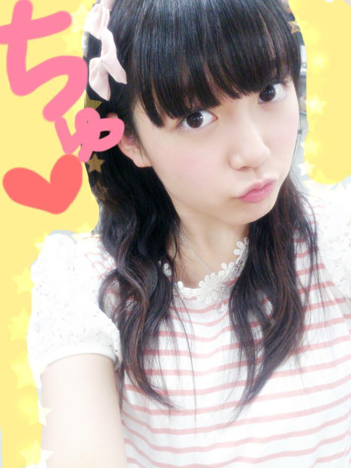
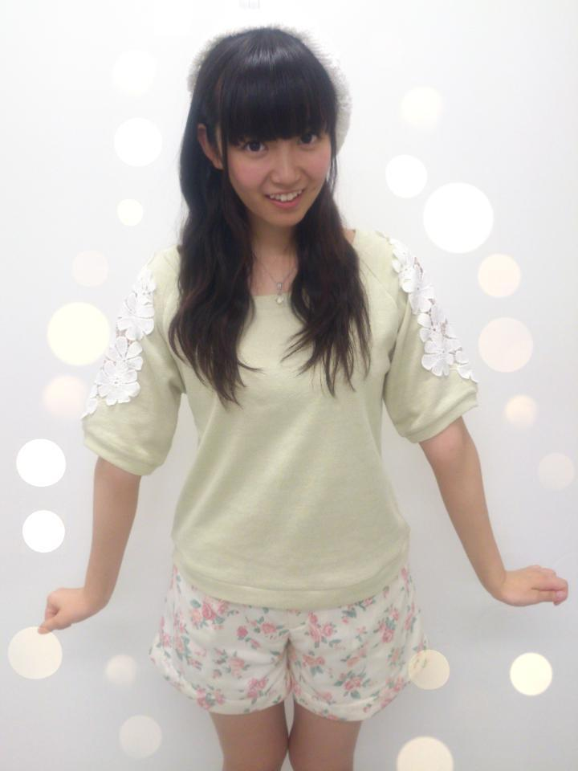
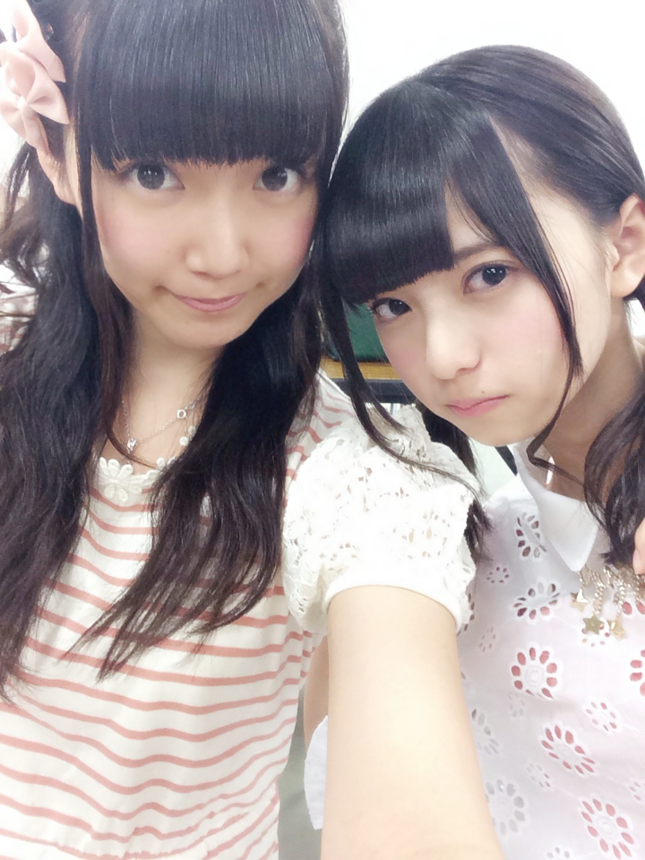
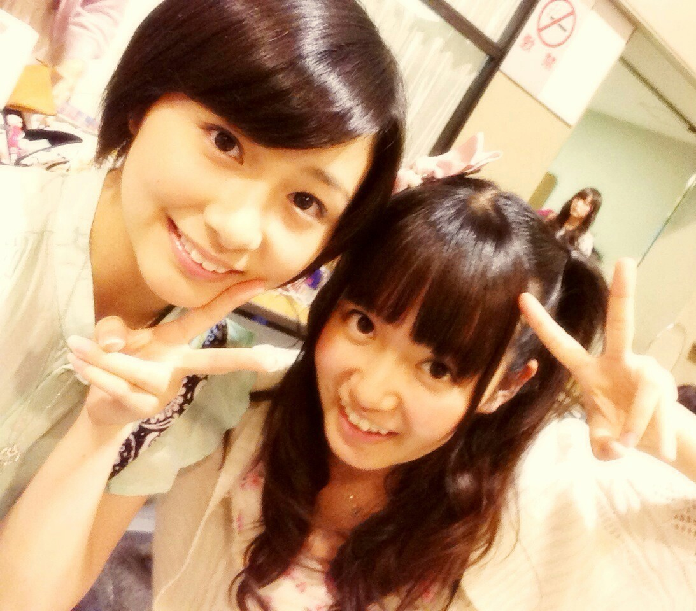
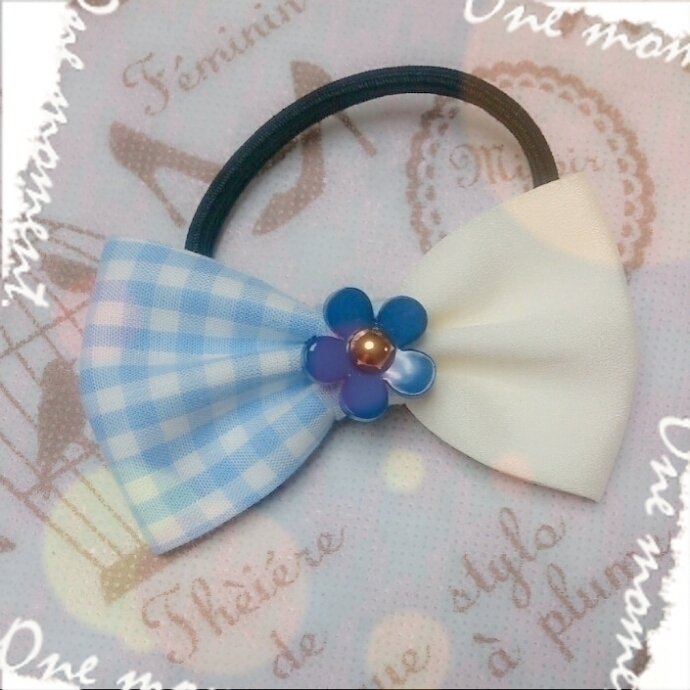

| 2014/07 23 Wed | ひめたん-OoO-その462 |

月曜日は幕張個握☆
遊びに来てくださったみなさん
ありがとうございました！
1部＊ベレー帽 × ウェーブおろし

2部＊ネコちゃんへあ × りぼん
3部＊お人形さんへあ × りぼん

みんな大好き格差社会コンビ。
ちなみに、この日記の
1枚目の写メが2部
3枚目の写メが3部なんだけど違いわかるかな？
わかんないよね( ¯•ω•¯ )
ってか写メの頭の方切っちゃだめよね( ¯•ω•¯ )ごめん
おにゃのこちゃんたち
りぼんをしてきてくれる子は
前からたくさんいるんだけどね
最近はひめたんのついんてーるも
真似してくれる子が増えて
ひめたん嬉しいの ⌒ﾟ( ･ᴗ･ )ﾟ⌒ ♡
ほかにも巻き髪とか編み込みとか
おにゃのこひめきゅんさんは
女子力がお高いようで。
ぼーいずひめきゅんさんも
ぴんく率・蝶ネクタイ率・名札率が
グングン高くなってきて
みんな意識高いよね！
さすが、ひめのこと
よくわかってらっしゃる
ひめは嬉しいです ⌒ﾟ( ･ᴗ･ )ﾟ⌒
ひめは名札をいつも忘れちゃうんだよね
ごめんね、次こそは持ってくるね
次こそは......
8th最後の握手会ってことで
この8th期間を振り返ってみようかな
初めて3部になった今回の握手会。
部数が増えたことは嬉しい反面
みなさん来てくれるかなー？
そんな不安もありながら始まった8th。
おとといは
ほんとにたくさんの方が
会いに来てくださって嬉しかったの( ;o; )♡
あ、朝は寂しかったよー(笑)
寂しすぎてみなみとふたりで
ずっと遊んでたんだからねー(笑)
お寝坊さーんは
大変だと思うけど早起き頑張ってー
ひめたんも頑張るからー！
次からは......って
ちょっと始まってるけど
9thは関東4部制になります( ˘ω˘ )
きゅんきゅん王国のみなさん
ひめは待ってるからね♡
きゅんきゅん王国さんじゃないけど
ちょっと気になるなーってあなたのことも
もちろん待ってるよー！
あっそうそう
いろんなレーンで
びーむが流行ってるらしいけど
本家が一番よ！負けないよ♡笑
そしてれなりん卒業おめでとう( ;o; )
れなりんはお勉強との両立を
ずっと頑張っていたよね
それで悩むことも多かったと思います
でもね、これはほんとに言いたい
のぎのぎには
学業との両立が課題な子もたくさんいるけど
少なくとも私は
れなりんがこんなに頑張ってるんだから
私がめげちゃだめだっていつも思ってました
多分私だけじゃなくて
ほかのみんなもそうだと思う
寝れないーとか疲れたーとか
テスト期間の辛い時も
れなりんはもっと辛いはずって
私なんてまだまだじゃないかって。
頑張るきっかけをくれたのは
いつだってれなりんだったんだよ！
ひめたんも乃木坂ファミリーさんみんなも
れなりんのことずっとずっと
応援してるからね☆
3年間お疲れ様でした＼(^o^)／

前回の乃木ののは
まなつ (秋元真夏ちゃん)
わかつき (若月佑美ちゃん)でした☆
どうでしたか？
先週よりしっかり進行しようと
頑張ってみたけどいかがでしたか(・∀・)？
まなつがラジオの中で言ってた
「モニマルズ」とやらをあとでググったら
なんだか可愛かったの
あんなに真夏さんのことばかにしたけど
近々こっそりおもちゃ屋さんに行こっかな。
あ、若月も一緒に行きたいね(〃ω〃)
若月がおもちゃ屋さん(〃ω〃)
あー絶対かわいい絶対可愛いよー♪♪
次回はお待たせしました！
伊藤寧々ちゃん
伊藤万理華ちゃんです☆
みんな待望の伊藤ちゃんずが
始めて乃木のので揃ったよ＼(^o^)／
記念すべき回にひめたんも立ち会えて嬉しい！
次回もお楽しみにっ
ねー見て！

ひめたんのりぼんコレクションがついに
100個達成⊂( ˆoˆ )⊃♡
記念すべき100個目は
ひめたんままからのプレゼント

こーれっ
ひめたんのコレクションが
基本的に白とぴんくばっかだから
100個目はちょっと冒険してみようと思って。
これからもりぼんを愛でるぜ⊂( ˆoˆ )⊃

 東京喰種見た⁇
東京喰種見た⁇
見たとしたらどうだった⁇
ちょっとこわい系って聞いて
気になってるけど
まだ観てないんだよね(´・ω・｀)
どんな？やっぱ面白い？
ひめたんはラブライブの楽曲で何が好き？
夏色えがおで1,2,Jump!
Music S.T.A.R.T!!
知らないLove＊教えてLove かな♪
髪の毛のケアなにしてる？？
一番は美容院でこまめに
トリートメントしてもらうと
つやつやになるよー
あとはJILL STUARTのヘアオイルがおすすめ。

ねー気づいた？
スマホごちゃごちゃしてたら
写メ貼れる枚数増えた(ﾉ)･ω･(ヾ)
やったあ♡
もっといっぱい撮んなきゃー

ラブライバーさんからのコメント嬉しい！
スクフェスは今キャンペーンやってるんだよね！
ことりちゃん何人でも入部してほしい！
スクフェスやってるよってひと
今ランクいくつー？
明日発売のSamuraiELOさんに
載せていただいてます！
(＊´・ω・＊)
スマホごちゃごちゃしてたら
写メ貼れる枚数増えた(ﾉ)･ω･(ヾ)
やったあ♡
もっといっぱい撮んなきゃー
ラブライバーさんからのコメント嬉しい！
スクフェスは今キャンペーンやってるんだよね！
ことりちゃん何人でも入部してほしい！
スクフェスやってるよってひと
今ランクいくつー？
明日発売のSamuraiELOさんに
載せていただいてます！
(＊´・ω・＊)
コメント(602)
2014/07/23 23:48